轨道定域化分析(Orbital localization analysis)¶
Multiwfn manual, p.865–872.英文原文见同名 English 章节。 Images:
../imgs/.
CPL 的不对称因子(gCPL) examples\excit\g_factor\TDDFT_opt_S1.out 是对该螺烯 S1 态的 TDDFT 几何优化的输出文件，以 S0 最低点作为初始几何。仅计算了 3 个激发态，这已足够，因为 CPL 的发射态就是 S1（Kasha 规则）。为了获得 gCPL，我们将此文件载入 Multiwfn，进入主功能 18 的子功能 18，Multiwfn 将载入最后输出的 𝛍tran 和 𝐦tran，它们对应于 S1 最低点结构处的数据。然后选择“2 本研究针对 CPL(This study is for CPL)”你将在屏幕上看到以下信息：
State Wavlen |e_tran| |m_tran| angle cos(angle) R D g
1 372.4 72.32 0.226 97.32 -0.127 -2.1 52.3 -0.001592
2 348.4 45.88 0.137 180.00 -1.000 -6.3 21.0 -0.011926
3 334.0 748.12 3.693 73.04 0.292 805.8 5597.0 0.005759
显然，gCPL 为 -0.0016，与 Commun. Chem., 1, 38 (2026) 表 1 中报道的相同分子在相同溶剂下的实验值 -0.0009 符号相同。Chem. Sci., 12, 5522 (2021) 图 3(f) 中报道的相应值为 +0.0013，他们的计算水平与我们相同，大小与我们非常接近，但符号不同。我怀疑他们在符号上弄错了。gCPL 与 S1 的 gCD（0.000003）之间的差异来自 S0 和 S1 最低点之间微小的结构差异。如前所述，你也可以让 Multiwfn 将当前结构导出为 pdb 文件并导出用于可视化 S1 的 𝛍tran 和 𝐦tran 的 VMD 脚本，以深入理解 gCPL。相关文件已作为 S1.pdb 和 CPL.vmd 提供在“examples\excit\g_factor\”文件夹中。
4.19 轨道定域化分析(Orbital localization analysis)¶
注：本节中的大多数信息也可参见我的博客文章“Multiwfn 的轨道定域化功能的使用以及与 NBO 和 AdNDP 分析的比较”(http://sobereva.com/380，为中文)。
轨道定域化是一种非常强大且有用的技术，它可以将常常表现出高度离域特征的正则分子轨道转化为定域形式，即定域分子轨道(LMO)。LMO 与许多经典
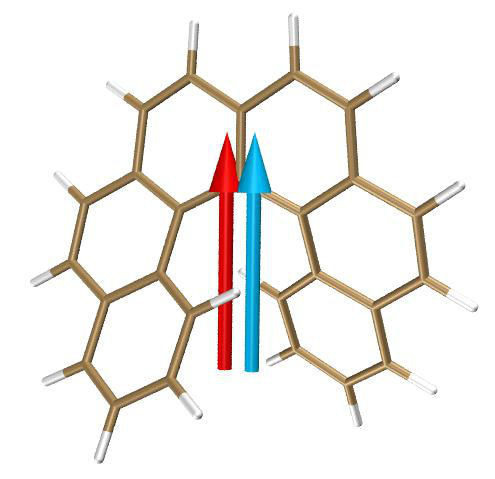
化学概念如化学键和孤对电子有密切关系，
注意：默认的轨道定域化方法，即基于 Mulliken 布居的 Pipek-Mezey 方法(PM-Mulliken)方法，在大量使用弥散函数时不建议使用，否则结果可能具有误导性。如果必须使用弥散函数，你应该换用基于 Becke 布居的 Pipek-Mezey 方法(PM-Becke)方法，或 Foster-Boys 方法，各种轨道定域化方法的优缺点见第 3.22 节介绍。
4.19.1 用 Pipek-Mezey 方法定域 1,3-丁二烯的分子轨道¶
¶
本节以反式-1,3-丁二烯为例说明 Multiwfn 的轨道定域化分析的使用。
进行 LMO 分析的基本步骤 输入文件是 examples\butadiene.fch，它是在 B3LYP/6-31G** 水平下产生的。你可以先通过主功能 0 可视化其 MO，你会发现所有 MO 都是高度离域的，没有一个与化学键理论的经典概念有直接对应。现在我们进行轨道定域化，将它们转化为更具化学意义的轨道。启动 Multiwfn 并输入
examples\butadiene.fch 19 // 轨道定域化(Orbital localization)。默认使用基于 Mulliken 布居的 Pipek-Mezey 定域化方法
2 // 对占据和非占据 MO 都进行定域化(Perform localization for both occupied and unoccupied MOs) 由于该体系很小，定域化迭代立即收敛，并打印所得轨道的主要特征。之后 Multiwfn 自动将 LMO 作为 new.fch 导出到当前文件夹然后载入。现在，内存中的轨道系数已完全更新为 LMO。你可以用不同方式表征它们。我们进入主功能 0 可视化这些轨道，你会发现所有轨道都表现出很强的定域特征，特别是占据轨道。下面是涉及 C6-C8 的三个 LMO 的截图，
前两个是占据的，它们分别对应于 σ 键和 π 键；第三个是非占据的，它可以模糊地认定为反 π 键轨道。
评估 LMO 能量 可以评估 LMO 的能量，如下所示。启动 Multiwfn 并输入 examples\butadiene.fch
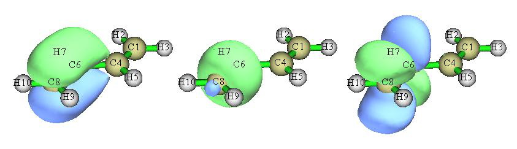
Multiwfn 交互
- 19 — 轨道定域化(Orbital localization)
- -4 — 允许 Multiwfn 生成并打印 LMO 的能量(Allow Multiwfn to generate and print energy for LMOs)
- 1 — 使用通过 F=SCEC-1 关系由 MO 能量和系数生成的 Fock 矩阵评估 LMO 的能量(Evaluate energies of the LMOs using the Fock matrix generated by MO energies and coefficients via F=SCEC-1 relationship)
2 // 定域化占据和非占据轨道(Localize both occupied and unoccupied orbitals) 计算完成后，Multiwfn 评估 LMO 的能量并按能量从低到高排序。你可以在屏幕上找到所有 LMO 的能量。最高占据和最低非占据 LMO 的信息如下所示
14 Energy: -0.2750728 a.u. -7.4851 eV Type: A+B Occ: 2.0
15 Energy: -0.2750728 a.u. -7.4851 eV Type: A+B Occ: 2.0
16 Energy: 0.2185911 a.u. 5.9482 eV Type: A+B Occ: 0.0
17 Energy: 0.2185913 a.u. 5.9482 eV Type: A+B Occ: 0.0
请在主功能 0 中绘制这些轨道以尝试识别它们的特征。
顺便说一下，也可以基于从外部文件载入的 Fock 矩阵评估 LMO 的能量（详见附录 7），如果无法基于 MO 能量和系数成功生成 Fock 矩阵，这就是唯一选择。例如，Fock 矩阵可以从 NBO .47 文件载入；为了对本体系实现这一点，我们可以进入主功能 100 并选择子功能 2，然后选择选项 10 将当前体系导出为 Gaussian 输入文件。然后适当修改输入文件以要求 Gaussian 输出 .47 文件，我们需要确保计算水平与 examples\butadiene.fch（B3LYP/6-31G**）完全相同。准备好的输入文件已作为 examples\butadiene_47.gjf 提供。用 Gaussian 运行它，你将在 C:\ 中找到所得的 BUTADIENE.47（此文件已作为 examples\butadiene.47 提供）。在主功能 19 中，在选择选项 -4 允许 Multiwfn 评估 LMO 能量后，如果你选择子选项“2 载入 Fock 矩阵从文件评估(Evaluate, loading Fock matrix from a file)”然后输入 .47 文件的路径，将载入记录在 .47 文件中的 Fock 矩阵，并将在适当时候用于评估 LMO 轨道能量
显示所有 LMO 的中心位置 可以可视化所有生成的 LMO 的中心位置，从而立即理解 LMO 的分布。这里我说明如何实现这一点。
重新启动 Multiwfn 并输入 examples\butadiene.fch
Multiwfn 交互
- 19 — 轨道定域化(Orbital localization)
- -8 — 切换“是否计算 LMO 的中心位置和偶极矩(If calculating center position and dipole moment of LMOs)”的状态为“Yes”
- -6 — 改变定域化方法(Change localization method)
- 10 — Foster-Boys
- 1 — 定域化占据轨道(Localize occupied orbitals)（非占据 LMO 的中心位置一般没什么意义，因此我们不定域非占据 MO）
n // 跳过偶极矩分析(Skip the dipole moment analysis) 如你从提示中所见，在轨道定域化如常完成、新生成的 new.fch 被自动载入 Multiwfn 后，程序计算每个 LMO 的中心位置。为了使中心的可视化容易，Multiwfn 在当前体系中加入 Bq 原子（即鬼原子）来代表 LMO 的中心。中心坐标以及 LMO 编号与 Bq 编号之间的对应关系自动导出到当前文件夹作为 LMOcen.txt。此实例中该文件的内容为
LMO 1 corresponds to Bq 11, X,Y,Z: 1.1372 0.7759 -0.0000 Bohr
LMO 2 corresponds to Bq 12, X,Y,Z: -1.1372 -0.7759 -0.0000 Bohr
LMO 3 corresponds to Bq 13, X,Y,Z: 1.1372 3.3081 -0.0000 Bohr
...[ignored]
然后我们返回主菜单并进入主功能 0 以可视化 LMO 中心和
轨道等值面。绘图设置已自动设为特殊状态以最好地可视化 LMO，目前你可以看到：
从该图我们可以非常清楚地理解生成的 LMO 的分布。每个青色球是一个鬼原子，代表一个 LMO 的中心。在当前设置下鬼原子的编号从 1 开始，因此图中显示的编号直接对应于 LMO 编号。例如，我们想同时可视化边界 C-C 键处的两个 LMO，由于标号为 8 和 11 的青色球位于该键周围，我们在轨道列表中选择轨道 8 来显示它，然后选择“显示+选择等值面#2(Show+Sel. isour#2)”并选择轨道 11。之后，将等值面值改为 0.13 并将绘制风格设为透明，你将看到
显然，通过 Foster-Boys 方法得到的两个 LMO 共同代表了边界 C-C 键的双键特征。这两个 LMO 被称为“香蕉”轨道，不
表现出 σ-π 分离特征。
你也可以尝试可视化通过 Pipek-Mezey 算法生成的 LMO 的中心位置。因为该方法将每个双键表示为一对分离的 σ 和 π LMO，它们的中心应该非常接近，从下图你可以发现中心确实几乎无法区分：
值得注意的是，有两种方法可以快速找到与你感兴趣的键对应的 LMO 的编号。第一种是检查轨道定域化过程中打印的轨道组成，第二种是直接可视化 LMO 中心并找到适当位置处青色球上方显示的编号，正如我刚才说明的。
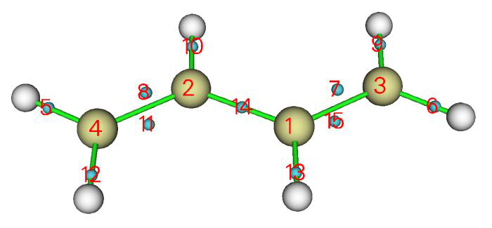
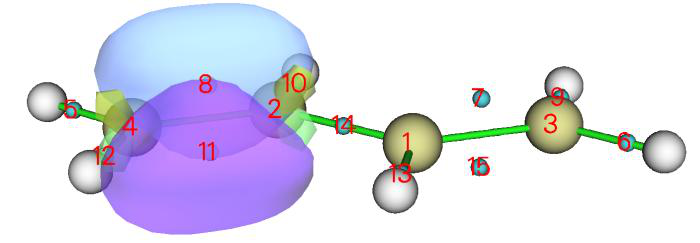
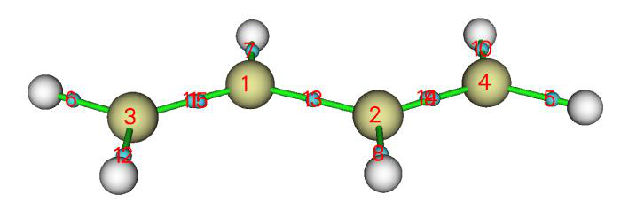
4.19.2 分析 SN2 反应的定域分子轨道的变化¶
¶
在本例中，我们研究定域分子轨道(LMO)沿反应路径的变化，以可视化化学键的变化，以一个典型的 SN2 反应为实例。
此 SN2 反应涉及 F-C 键的形成和 C-H 键的断裂，因此在以下分析中我们将聚焦于相应的两个 LMO。该 SN2 反应的 IRC 如下所示，考虑了五个点，它们的 .fch 文件已提供在 examples\SN2 文件夹中。
首先，我们为过渡态(TS)几何生成 LMO。启动 Multiwfn 并输入 examples\SN2\TS.fch
Multiwfn 交互
- 19 — 轨道定域化(Orbital localization)
- 1 — 定域化占据轨道(Localize occupied orbitals)
- 0 — 可视化轨道(Visualize orbitals) 我们可以发现有两个轨道分别对应于 F-C 和 C-H 键，我们将它们画在一起以便于比较
绿-蓝等值面和紫-黄等值面清楚地描绘了分别对应于 F-C 和 C-H 键的轨道。
我们对 R.fch、TS-1.fch、TS+1.fch 和 P.fch 绘制同样类型的图，然后将图放在一起，如下所示
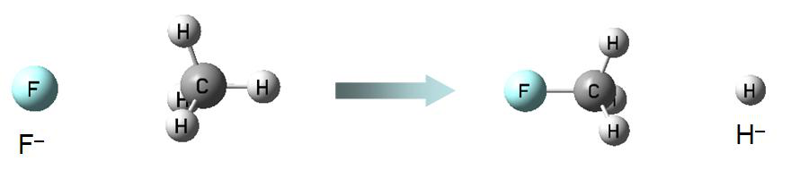
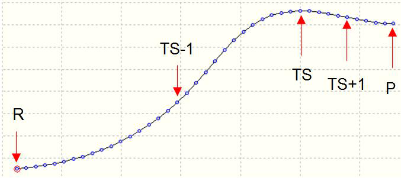
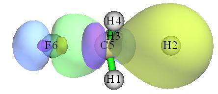
从图中，SN2 反应过程中化学键的变化相当清楚（R→TS-1→TS→TS+1→P）。在反应物状态，绿-蓝等值面对应于氟原子的孤对电子，而紫-黄等值面显示典型的 C-H 共价键特征。随着反应进行，两个 LMO 平滑变化，C-F 共价键特征越来越突出，在最终产物状态，紫-黄等值面代表的 LMO 已经对应于 H- 阴离子的 1s 轨道。
4.19.3 表征 [Re2Cl8]2- 阴离子的 Re-Re 键¶
人们广泛接受 [Re2Cl8]2- 阴离子中的 Re-Re 键是四重键，
构型为 (σ2π4δ2)。σ 键来自两个铼原子的 𝑑𝑧2 −𝑝𝑧 杂化轨道的重叠，两个 π 键源于它们的 dxz 和 dyz 轨道的重叠，而 δ 键由它们的 dxy 轨道重叠形成。这一经典概念能否通过轨道定域化分析验证？
在 B3LYP 下对 Cl 用 6-31G*、对 Re 用 SDD 产生的 [Re2Cl8]2- 阴离子的 .fchk 文件作为 examples\Re2Cl82-.fchk 提供。将其载入 Multiwfn 并对占据轨道进行轨道定域化，从输出中我们可以立即识别出对应于 Re-Re 键的四个 LMO：
Almost two-center LMOs: (Sum of two largest contributions > 80.0%)
57: 7(Cl) 73.8% 2(Re) 22.5% 58: 10(Cl) 73.8% 2(Re) 22.5%
59: 4(Cl) 73.8% 1(Re) 22.5% 60: 2(Re) 48.1% 1(Re) 48.1%
61: 8(Cl) 73.8% 2(Re) 22.5% 62: 3(Cl) 73.8% 1(Re) 22.5%
64: 1(Re) 45.9% 2(Re) 45.9% 66: 6(Cl) 73.8% 1(Re) 22.5%
67: 9(Cl) 73.8% 2(Re) 22.5% 69: 5(Cl) 73.8% 1(Re) 22.5%
83: 1(Re) 45.9% 2(Re) 45.9% 84: 2(Re) 43.6% 1(Re) 43.6%
提示：如果你想更容易找到对应于 Re1-Re2 键的 LMO 的编号，最好的方法是在启动 Multiwfn 之前将 settings.ini 中的 "iprintLMOorder" 设为 1。之后，LMO 的组成将按原子和原子对的顺序打印。
然后我们进入主功能 0 以可视化它们（在默认等值面值 0.05 下）：
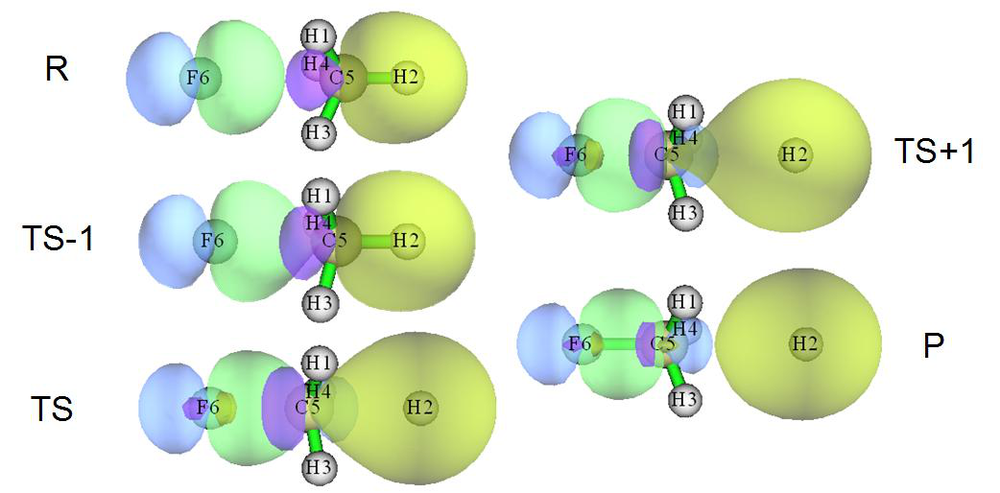
从 LMO 的等值面图可以清楚看出，LMO60 对应于 σ 键，LMO64 和 LMO83 对应于 π 键，LMO84 对应于 δ 键。这一观察支持了四重键的说法。
然而，如果我们计算 Mayer 键级，会发现情况并不那么简单。用主功能 9 计算的 Re-Re 键的 Mayer 键级为 2.94，为什么该值明显低于预期的 4.0？
为了获得更深入的理解，我们使用主功能 9 对 Re-Re 键进行“轨道占据数微扰的 Mayer 键级(Orbital occupancy-perturbed Mayer bond order)”分析，输出为
Mayer bond order after orbital occupancy-perturbation:
Orbital Occ Energy Bond order Variance
...[Ignored]
60 2.00000 -0.14354 2.001481 -0.935449
...[Ignored]
64 2.00000 -0.12793 2.276388 -0.660542
...[Ignored]
83 2.00000 -0.01749 2.276388 -0.660542
84 2.00000 0.02809 2.466317 -0.470613
结果表明 σ LMO 的贡献为 0.935，每个 π LMO 贡献 0.661，δ LMO 贡献 0.471。虽然原则上 Mayer 键级不能精确分解，但这些数据足以帮助我们理解每个成键
LMO 的相对重要性。显然 σ 键对 Re-Re 键最重要，而 δ 键的重要性相对最低。
现在出现了一个新问题，为什么四个 LMO 对 Re-Re 键 Mayer 键级的贡献不同？这可以通过用更低的等值面值可视化它们的等值面来回答。下面展示了等值面值为 0.01 的四个 LMO 的图
从图中我们发现 LMO60 基本上只出现在两个 Re 原子周围，因此
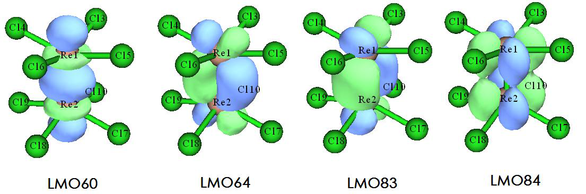
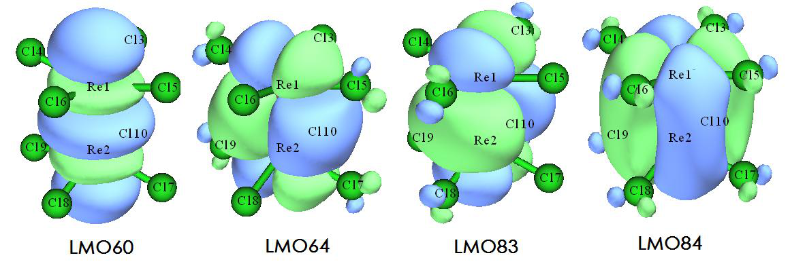
它对 Re-Re Mayer 键级的贡献应接近 1.0。LMO64 和 LMO83 都略微离域到四个 Cl 原子上，因此它们并不纯粹表现出 Re-Re 键特征，从而对 Re-Re Mayer 键级的贡献较低。LMO84 离域到全部八个 Cl 原子上，自然可以预期它对 Re-Re Mayer 键级的贡献应最小。
顺便说一下，如果你有兴趣，可以对 Cr2 进行轨道占据数微扰的 Mayer 键级分析，你会发现 Mayer 键级几乎恰好为 6.0，对应于 Cr-Cr 键的所有六个 MO 基本上贡献都为 1.0，这主要是因为这些轨道没有离域到任何其他原子上。
4.19.4 基于双中心 LMO 研究 CH3NH2 的键偶极矩¶
如第 4.A.11 节所述，Multiwfn 支持几种评估键偶极矩的方法。在本节中我以 CH3NH2 为例说明基于双中心 LMO 可以研究键偶极矩，它在某种程度上反映键极性。相关理论介绍见第 3.22 节。
启动 Multiwfn 并输入 examples\CDA\CH3NH2\CH3NH2.fch
Multiwfn 交互
- 19 — 轨道定域化(Orbital localization)
- -8 — 切换“是否计算 LMO 的中心位置和偶极矩(If calculating center position and dipole moment of LMOs)”的状态为“Yes”
- 1 — 定域化占据轨道(Localize occupied orbitals) y
Single-center orbital dipole moments (a.u.):
1 ( 5N ) X/Y/Z: -0.04465 0.01500 0.00001 Norm: 0.04710
2 ( 1C ) X/Y/Z: 0.00010 0.00014 0.00000 Norm: 0.00017
9 ( 5N ) X/Y/Z: -1.28448 0.41598 0.00001 Norm: 1.35016
Sum X/Y/Z: -1.32903 0.43112 0.00001 Norm: 1.39721
Two-center bond dipole moments (a.u.):
3 ( 5N - 6H ) X/Y/Z: -0.08951 -0.20801 0.30542 Norm: 0.38021
4 ( 1C - 4H ) X/Y/Z: -0.06753 0.08375 -0.00000 Norm: 0.10758
5 ( 5N - 7H ) X/Y/Z: -0.08950 -0.20802 -0.30543 Norm: 0.38022
6 ( 5N - 1C ) X/Y/Z: 0.17708 0.25312 -0.00000 Norm: 0.30891
7 ( 1C - 3H ) X/Y/Z: 0.08532 0.06534 -0.09566 Norm: 0.14387
8 ( 1C - 2H ) X/Y/Z: 0.08532 0.06534 0.09566 Norm: 0.14387
Sum X/Y/Z: 0.10119 0.05152 -0.00001 Norm: 0.11355
进入主功能 0 后，我们可以看到下图
Multiwfn¶
弱作用可视化、能量分解、CDFT、ETS-NOCV、(超)极化率
英文原文见同目录
09_教程4.20-4.24.md｜图片目录：../mw_imgs/